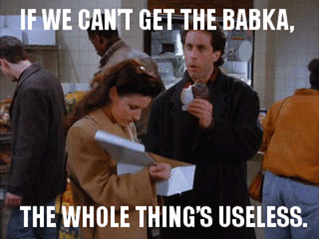

Rich Chocolate Babka (from S05E13)

It's soft and moist, and the chocolate just melts in your mouth when you bite into a slice.
Ingredients
Babka Dough
- 3/4 cup milk
- 1/4 cup butter
- 2 cups bread flower
- 2 cups all-purpose flower
- 2 tsps active dry yeast
- 1/4 cup white sugar
- 1/4 cup water (optional)
- 1 egg
- 3/4 tsp salt
Chocolate Filling
- 5 squares semisweet chocolate, finely chopped
- 1 1/2 teaspoons ground cinnamon
- 1/3 cup white sugar
- 1/4 cup butter, chilled
Streusel
- 1/4 cup confectioners' sugar
- 1/4 cup all-purpose flour
- 1/4 cup butter, chilled
- 1 egg, beaten
- 1 tbsp water for glaze (optional)
Directions
- Warm the milk and melt 1/4 cup butter in a glass or ceramic bowl in the microwave for 30 seconds, or on the stovetop in a saucepan. Combine the bread flour, 2 cups all-purpose flour, yeast, and 1/4 cup sugar. Add the water, the milk-butter mixture, the egg, and the salt to the dry ingredients and mix well.
- Use the dough hook in a stand mixer on low speed or knead the dough by hand until the dough is smooth and elastic, about 15 minutes. If the dough is too wet, add more bread flour, about 2 tablespoonfuls at a time (up to 8 tablespoons) to make a workable dough; too much flour can make the dough dry. Cover the dough with a damp cloth and let rise until double in size, about 1 to 1 1/2 hours.
- Make the chocolate filling and the streusel while the dough is rising. For the filling, stir together the finely chopped chocolate, the cinnamon, and 1/4 cup sugar. Cut in 1/4 cup chilled butter with a fork. To make the streusel, combine the confectioners' sugar and 1/4 cup all-purpose flour; cut in 1/4 cup chilled butter until the mixture resembles coarse crumbs.
- When the dough has doubled, punch the dough down and cut it into two equal pieces. Loosely shape each piece into a ball. Cover the dough with a damp cloth and let it rest for 10 minutes.
- Roll out one portion on a lightly floured surface to form a 15x4-inch rectangle. Sprinkle with half the chocolate filling, roll up to form a long log, and seal the seam. Attach the ends to form a circle and place the ring, seam-side down, on a parchment-lined baking sheet. Repeat with the second piece of dough. Use a serrated knife or kitchen shears to cut slits at 1-inch intervals around the rings. Cover the rings with damp kitchen towels and let rise until doubled in size, about 30 minutes.
- Preheat an oven to 350 degrees F (175 degrees C).
- Brush the loaves with the egg wash, if desired. Sprinkle streusel on top. Bake the loaves for about 25 minutes, rotating the baking sheets to promote even browning, until the bread is a deep golden brown.
Nutrition Facts
Per serving:378 calories; protein 6.2g; carbohydrates 45.6g; fat 20g; cholesterol 75.3mg; sodium 295.2mg.
Home